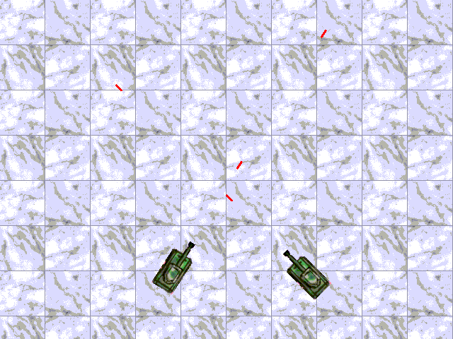

ArcadeTank
page was renamed from Tank
Tank is a game written in C++, using [http://www.libsdl.org SDL]. I also used the SDL-gfx library for rotozooming, because I hadn't yet taken linear algebra. I wrote this back in 2002 just for fun, mostly to learn SDL. I only put it here for my own sentimental value. Here's the [http://z3.ca/files/Tank/tank.tar.gz source].
This tank game has only one mode of play, 2 player hotseat. The first tank to hit the other tank 10 times wins the game. It has no command line options, no in game menus, no onfiguration files. Plus the collision detection and gameplay itself are completely buggy. However, I will no longer work on this ancient relic because I am too sick of it.
And here's a screenshot (I shamelessly stole the tank sprites from a game called Feuerkraft, whose website seems to be defunct, and the background from some free backgrounds site):

CategoryProject CategoryGame